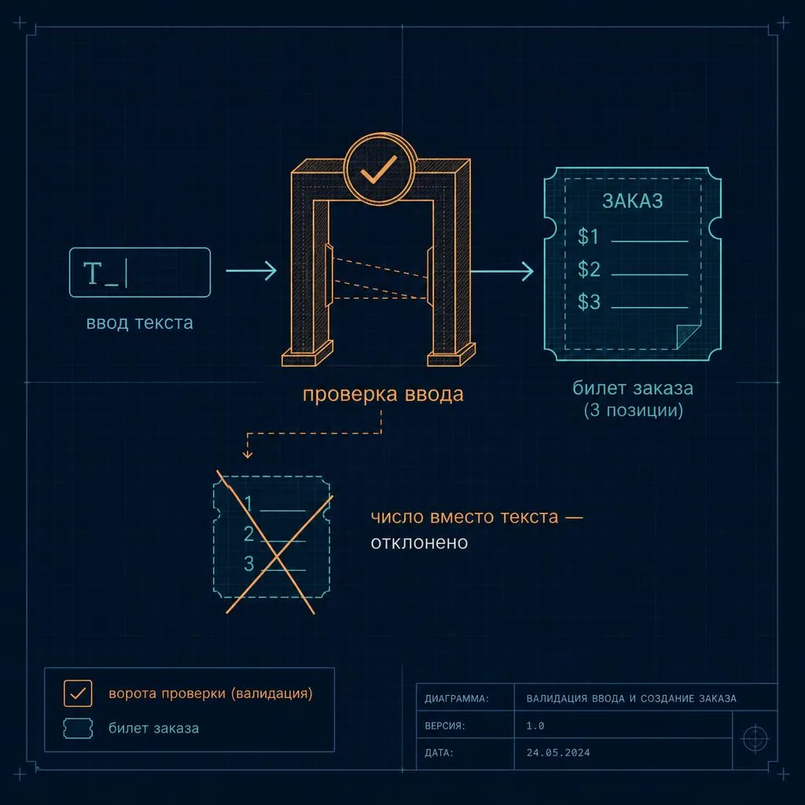

Аналогия: официант принимает заказ, но прежде чем нести его на кухню, проверяет — есть ли такое блюдо в меню и понятно ли, что именно имелось в виду. Так же и скрипт: сначала получает «заказ» через параметры, а затем обязан проверить, что заказ вообще осмысленный.
Первая версия healthcheck.sh принимает один параметр — порог заполнения диска в процентах — и должна отказаться работать, если порог не передан или не похож на число от 1 до 100.
Всё, что написано после имени файла при запуске, становится доступно скрипту в специальных переменных. Первый аргумент попадает в $1, второй в $2 и так далее. $0 — имя самого файла скрипта. $# — количество переданных аргументов.
#!/bin/bash
threshold="$1" # первый параметр, переданный при запуске
if [ -z "$threshold" ]; then
echo "Использование: $0 <порог диска, %>" >&2
exit 1
fi
if ! [[ "$threshold" =~ ^[0-9]+$ ]] || [ "$threshold" -lt 1 ] || [ "$threshold" -gt 100 ]; then
echo "Ошибка: порог должен быть числом от 1 до 100, получено '$threshold'" >&2
exit 1
fi
echo "Порог диска: ${threshold}%"
Разберём построчно, потому что здесь сразу несколько важных мелочей.
Первая строка #!/bin/bash называется шебанг (shebang) — это не комментарий, хотя и начинается с #. Она сообщает системе, какой программой исполнять файл.
threshold="$1" кладёт первый параметр в переменную с понятным именем, чтобы дальше не путаться в безликих $1, $2. Обрати внимание на кавычки — "$1". Это обязательная привычка, и почему именно — в разделе 3.
if [ -z "$threshold" ]; then ... fi — проверка условия. Флаг -z проверяет «строка пустая?» (от zero length). Если параметр не передали, печатается подсказка, как запускать скрипт, и вызывается exit 1.
Число после exit — код завершения: 0 означает «всё прошло успешно», любое другое (обычно 1) — «что-то пошло не так». Это принципиально: CI/CD-пайплайны (уроки 3.2 CI-CD и 6.1 CI-CD в Kubernetes) проверяют именно этот код, чтобы решить, останавливать ли цепочку.
Конструкция >&2 перенаправляет сообщение в поток ошибок вместо обычного вывода. Мелочь, которая отличает аккуратный скрипт: тогда ./script.sh > result.txt положит в файл только полезный результат, а ошибки останутся на экране, где их видно.
Вторая проверка сложнее: [[ "$threshold" =~ ^[0-9]+$ ]]. Двойные квадратные скобки [[ ]] — расширенная форма условия, которая, в отличие от одинарных [ ], понимает регулярные выражения через оператор =~. Шаблон ^[0-9]+$ читается так: ^ — начало строки, [0-9]+ — одна или несколько цифр подряд, $ — конец строки. Вместе — «вся строка состоит только из цифр». Восклицательный знак перед ней переворачивает условие: ошибка, если строка не число. Дальше -lt (less than) и -gt (greater than) сравнивают уже как числа. Порядок важен: сначала убеждаемся, что это число, и только потом сравниваем — иначе [ "abc" -lt 1 ] само упадёт с ошибкой.